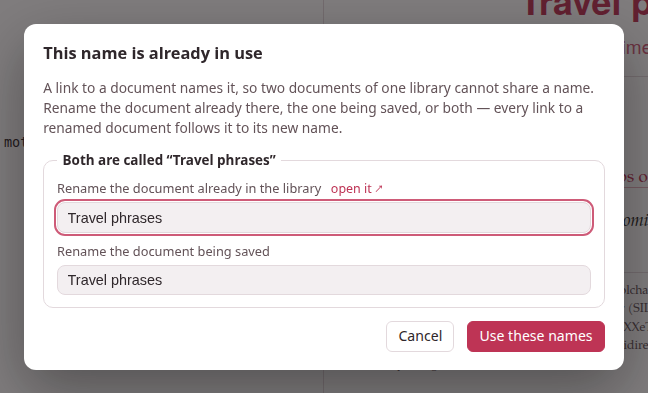

Names and links
A document can link to another one of the same library — see the verbs of motion — and the link names its target the way you would: by its name. This page is about what a name is, how the studio keeps names unique, what happens to the links when a document is renamed or deleted, and the dialog that asks you for a name when one is taken.
1. A document’s name is its title#
The name of a document is the title: line of its front matter — what the library shows on its card, what the document’s page shows in its bar, and what a link to it spells:
title: Verbs of motiontarget: faA link is written [shown text](doc:Name):
The same verbs come back in [the chapter on motion](doc:Verbs of motion).[](doc:Verbs of motion) — left empty, the link shows the document's title.Behind the name every document also has two identifiers of its own — the name of its folder (verbs-of-motion-3f9a1c) and a permanent one kept in its record — which never change and which you never type. The name is the one you read and write, and the one you may change.
Names are compared as a Mac or a Windows machine compares file names: case does not matter, and a run of spaces counts as one. doc:verbs of Motion reaches Verbs of motion. A name may hold spaces, any script, and parentheses that pair up (doc:Table 7-6 (percentages)); a lone parenthesis, or a backslash, is written with a backslash in front of it (doc:Notes \(draft). You rarely write that by hand: Doc link… does.
What a link looks like#
On the page, a link to a document is set in the accent colour with a small → after it, and opens the document in the same tab. On paper it is the same words in the link colour, since there is nothing to click through to. The links of this guide name its pages the same way — this one is written [](doc:Writing in the editor):
Everything about typing is in [](doc:Writing in the editor), and the buttons thatbring documents in are in [the page on uploads](doc:Bringing documents in and out).Everything about typing is in Writing in the editor, and the buttons that bring documents in are in the page on uploads.
A link whose name no document has — its target deleted, or not written yet — is not dropped: it is drawn in red, dashed, with ⚠ after it, and its tooltip names what it is waiting for: No document named “Verbs of motion” in this library — create or upload one with this name and this link will work again. The moment a document of that name exists — made with + New, uploaded, restored, or another one renamed to it — the same link works, with nothing rewritten. Every starter page has one such link, to a document it invites you to write.
A link reaches only its own library: the studio’s documents link to one another, and the notes of one book link to the notes of that book. A link from a studio document to a note, or from a book’s note to a studio document, finds nothing there.
2. The Doc link… picker#
Doc link…, in the editor’s bar, is the easy way to write a link. It opens Link to another document: every other document of the library — the one you are editing is left out — each with its title and subtitle.
- Filter by title or tag narrows the list as you type.
- Click a document to choose it.
- Shown text is the link’s own words; it starts with whatever you had selected in the editor. Left empty, the link shows the target’s title, and follows it when the title changes.
- Insert link puts
[shown text](doc:Name)in at the cursor, in place of the selection, the name escaped where it must be.
With no other document in the library, the button says so and opens nothing.
3. Renaming follows the links#
Change a document’s title: and save it, and you have renamed it. Every link in the library that named it by the old name is rewritten to the new one, as Obsidian does — each link’s shown text kept, the document’s own links to itself included, and the exercises in your exercise decks too, which link to the studio’s documents the same way. A change of case or of spacing is a rename like any other: a link always spells the name as it is now.
- A document rewritten only because another one was renamed keeps its “updated” date, so the library’s Last modified order does not reshuffle; a PDF built from it is marked source changed, since its text did change.
- The editor that made the rename takes back its own rewritten links, as an edit you can undo.
- An editor left open in another tab while a document it links to is renamed follows the rename at its next save, instead of writing the old name back. (It follows the renames this run of Parseh made; one made before a restart is already in the saved text it opened.)
4. One name, one document#
Since a link names its target, no two documents of one library may share a name — the studio’s library, all its languages together, or the notes of one book, or of one video. The name is checked on every way a document comes into the library or changes its name:
- Save, Save & view and Ctrl+S in the editor, when the title says something new — and the first save of a new document;
- Paste LLM answer;
- Upload .md / .zip, after its header dialog, when there was one — a file’s title against the library’s documents and against the other files of the same zip;
- Load from backup, for a document of the backup with an id of its own (one with the same id is the same document, kept or replaced as ever) — against the library and the rest of the backup;
- the same in a book’s or a video’s notes.
The name conflict dialog#
When a name is taken, nothing is written — not the save, not the upload, not the restore — and a dialog opens: This name is already in use.

For each clash it shows a box, Both are called “Verbs of motion”, with two fields, each filled with the name the document has now:
- Rename the document already in the library
- — with open it ↗ beside it, which opens that document in a tab of its own so you can see which one it is without losing what you are doing;
- Rename the document being saved
- — or being added, with the file it comes from, for an upload or a restore. For two files of one zip that share a name, the first field is Rename the other document being added.
Change either one, or both — they may even swap names — and press Use these names (or Enter in a field). The button says Checking… while the server looks at every name again, together. A name that is still taken — by the other document of the box, or by any third document of the library — is said under the field you typed it in, “Verbs” is already the name of another document — choose another name, and the dialog stays open, as it was, for another; an empty field is A document needs a name — give it one. When every name is free, it all goes through at once: the document already in the library is renamed (and every link to it follows it), the incoming document is written under its name, and a link inside an upload or a backup that named another document of that same upload or backup follows that document to its new name, since it was written for it.
Cancel — or Escape, or a click outside — writes nothing. The editor keeps your text exactly as it was, and says Not saved: that name is taken — nothing was written; a cancelled paste comes back in its box; a cancelled upload skips that file; a cancelled restore restores nothing. For a backup, the names you gave are given again to its Replace them, and if a document put back by Replace them holds a name that is taken, the dialog asks again.
The same dialog, titled This name cannot be used, asks for another name when one holds a |: a link to it standing in a table would split the cell. (A document named with one before names were checked keeps it, and Doc link… links it by its permanent id, which reaches it too.)
Names given for you#
Where there is nobody to ask, the studio picks a free name itself:
- Duplicate names the copy Verbs of motion (copy), then (copy 2), (copy 3)… — in its front matter as in the library;
- a new note beside a book or a video is A note, then A note 2…;
- a pasted text with no title at all is Untitled, then Untitled 2…, in a front matter made for it when it has none. (An uploaded file is never nameless: its header dialog asks for a title.)
5. Deleting a document#
Deleting a document leaves every link to it as it is: drawn in red, waiting. Nothing is rewritten, so the day a document of that name exists again — you write it anew, upload it, restore it from a backup — every link to it works again.
6. Links written before names#
Earlier versions of Parseh wrote a link with the target’s permanent id, twelve characters of hexadecimal: [](doc:9f3c1a7b20de). Such a link still works — a link whose name no document has, but which spells the permanent id of one, reaches that one — and it is rewritten by name once, by itself:
- the studio’s library when Parseh starts, a book’s or a video’s notes the first time they are opened after that;
- and after every upload and restore, for the links that came in with it.
The same pass gives a name of its own to any two documents that still share one (nothing forbade it before): the oldest keeps the name, the others get 2, 3… after it, each said on the server’s console. Their links are then written by their new names.
7. Who links here#
A document’s page lists every document of the library that links to it — ↩ Linked from — with the words around each link: see The document page.